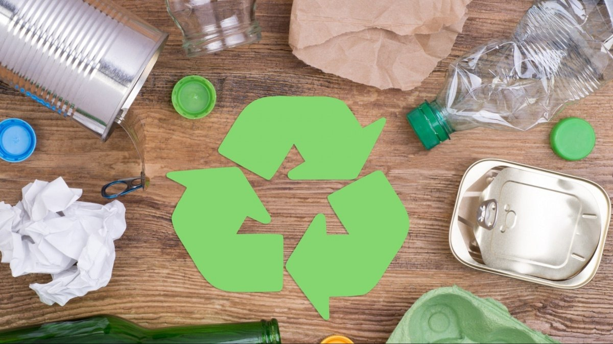
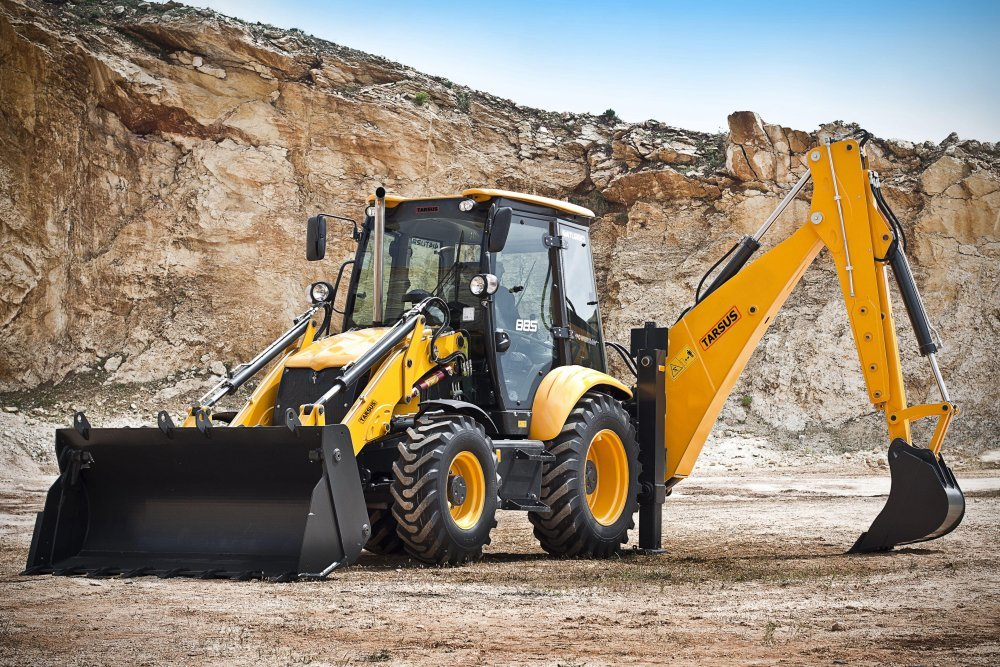
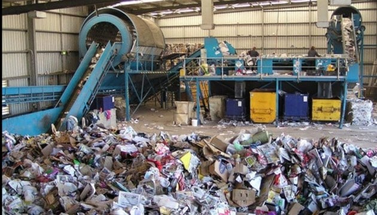
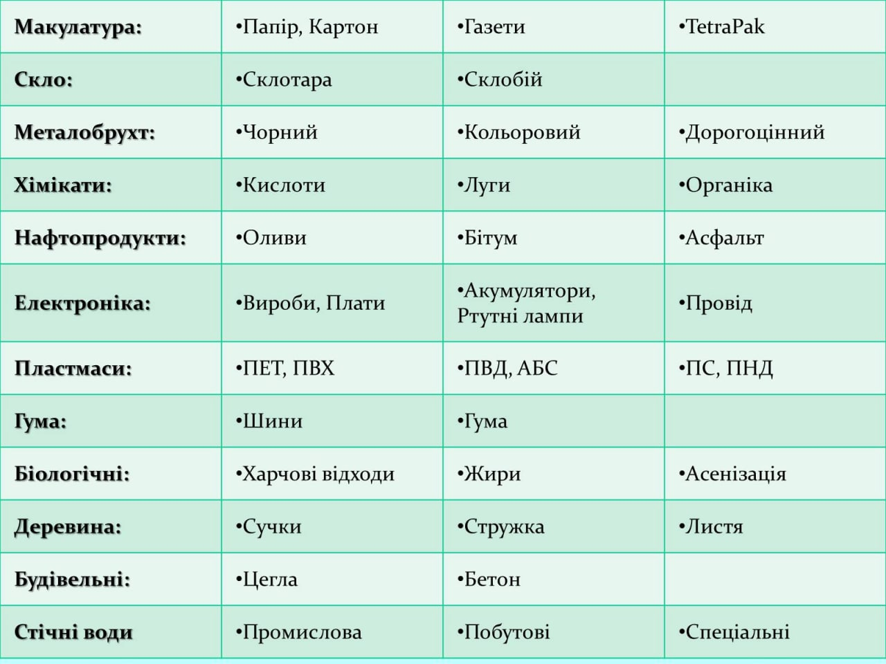
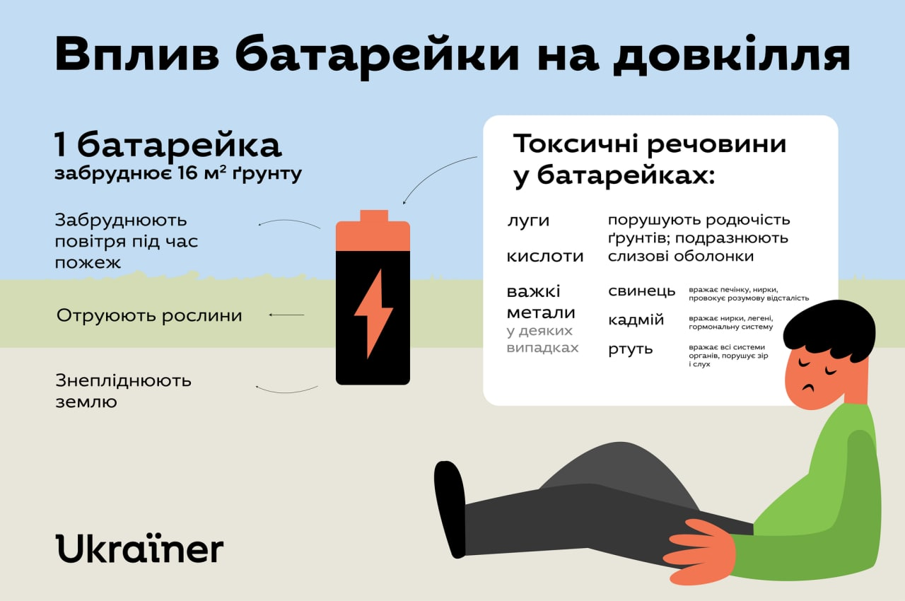

1. Загальний опис
Утилізація – доцільне використання відходів або залишків виробництва для отримання корисної продукції. Наприклад, при збагаченні вугілля переробка відходів здійснюється шляхом їх обробки та приготування для відвантаження на виробництво будівельних та шлакових матеріалів: пористих наповнювачів бетону (аглопарит, керамзит), паливовмісної домішки для виробництва цегли та будівельної кераміки, випалення низькомарочних в’яжучих речовин (цементу).
2. Переробка відходів
Найпоширеніша вторинна, третинна, інші переробки різними масштабами таких матеріалів, як скло, папір,
алюміній, асфальт, залізо, тканини та різних видів пластику. Також спрадавна використовують в сільському
господарстві органічні господарські та побутові відходи.

3. Методи переробки сміття
Найперспективнішим шляхом подолання негативного впливу відходів на навколишнє середовище є перехід від
полігонного захоронення до промислової переробки.
Деякі види відходів успішно перероблюють

4. Розробки
Науковці з Нідерландів представили останні розробки в галузі оброблення відходів — поліпшену технологію,
яка без попереднього сортування, в рамках однієї системи, розділяє й очищає всі відходи, які туди
надходять, до первісної сировини. Система повністю переробляє всі види відходів (медичні, побутові,
технічні) в закритому циклі, без залишку. Сировина повністю очищається від домішок (шкідливих речовин,
барвників тощо), пакується та може бути використана вдруге. При цьому система екологічно нейтральна
У Німеччині споруджено та протестовано TÜV (німецькою Службою технічного контролю та нагляду) завод,
який успішно працює за даною технологією 10 років у тестовому режимі. На сьогодні уряд Нідерландів
розглядає питання про будівництво на території своєї країни.

5. Види вторинної сировини

6. Переробка металів
Більшість металів доцільно переробляти вдруге. Непотрібні чи зіпсовані предмети, так званий брухт, здають на пункти приймання вторсировини для подальшого їх переплавлення. Особливо вигідною є переробка кольорових металів (міді, алюмінію, олова), поширених технічних сплавів (побєдит) і деяких чорних металів (чавун). Розробляються технології переробки залізовмісних відходів металообробної промисловості

7. Шкода для довкілля
Для того, щоб недопалки і фільтри сигарет перегнили, необхідно дванадцять років. Для того, щоб розклалася алюмінієва банка, буде потрібно від 200 до 500 років. Синтетичні підгузники і гігієнічні подушечки зникнуть безслідно тільки через 500-800 років. Залишки пінополістиролу наші нащадки не зможуть знайти тільки через п'ять тисячоліть, а для зникнення з поверхні землі скляної пляшки потрібно близько одного мільйона років.
